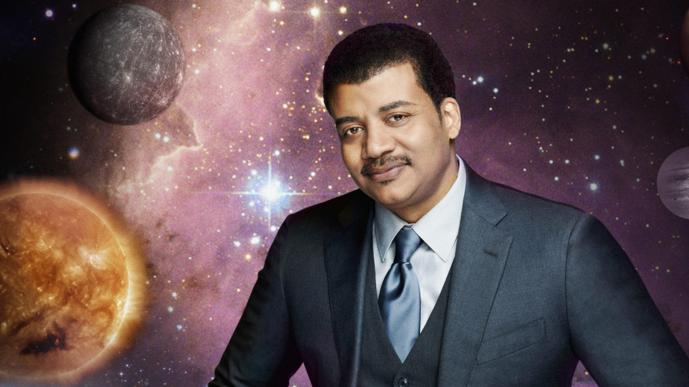

There is no complete catalog of the stars. The same is true of Facebook groups that gather under the name of Neil deGrasse Tyson. Facebook itself does not publish a public directory ranked by membership. Private groups remain hidden to outsiders. Member counts shift daily. Search engines surface only fragments. What follows is therefore not a definitive census of every group with one thousand or more members. Such a list cannot be assembled from public information alone.
Instead, this story examines the most prominent communities that public data reveals — those whose membership has crossed into the hundreds of thousands. These are the digital galaxies bright enough to be seen from outside. Around them orbit countless smaller groups, many private, many short-lived, many focused on single topics or local chapters. The true number of groups with at least one thousand members is unknown and likely larger than any outsider can count.
What we can observe are the major ones. Their scale alone tells a story about the reach of popular science communication in the social media age.
The Near-Million Member Circle
Approximately 979,000 members · Private · Created January 2023
One of the largest known gatherings is a private group simply titled “Neil deGrasse Tyson.” Public snapshots from search engines and archived pages place its membership near 979,000. It was created in mid-January 2023. The stated purpose is straightforward: “We all are Neil deGrasse Tyson fans.” The rules emphasize respect, kindness in debate, a ban on bullying, and a prohibition on self-promotion and spam. Intellectual property must be credited. The group is visible in searches but closed to non-members for posts and membership lists.
In a private space of this size, the daily conversation becomes a continuous stream of shared clips from StarTalk, stills from Cosmos, questions about black holes, debates over the status of Pluto, and reactions to Tyson’s latest media appearances. Members post memes that mix astrophysics with everyday life. Others bring personal stories of how a particular lecture or book shifted their view of the universe. Because the group is private, the precise texture of those exchanges remains known only to those inside. What is visible from the outside is the sheer gravitational pull of the name. Nearly a million people chose to request entry into a single digital room dedicated to one scientist’s public work.
The existence of a community this large raises quiet questions about the nature of modern fandom. Is it primarily celebration of Tyson’s personality and delivery style? Is it a proxy for broader interest in astronomy and critical thinking? Or does it function as a distributed classroom where people who never took a formal physics course can still participate in the conversation? The answers likely differ for each member. What remains measurable is the number itself. Nearly one million accounts have found their way into this particular orbit.
Activity metrics reported in public views show dozens of new posts on active days and hundreds across a month. The group has existed long enough to develop its own internal culture and moderation practices. It stands as the brightest object in this particular survey — a reminder that science communication can still command attention on a platform more often associated with argument and distraction.
The Half-Million Public Forum
Approximately 512,000 members · Public · Long-running
Another major community appears under the same simple name, “Neil deGrasse Tyson,” and operates as a public group. Recent public posts and welcome messages place its membership in the range of 512,000. It has been active for years, with welcome posts dating back at least to 2019. Unlike the larger private group, its content is visible to anyone with a Facebook account. That visibility changes the character of the space.
Public groups of this scale become stages as much as conversation rooms. Posts about the expanding universe, the rarity of life, or the number of stars draw hundreds of reactions and long comment threads. Some threads stay focused on the science. Others drift into politics, religion, or cultural commentary — topics that Tyson himself has engaged in public life and that members feel free to pursue under the group’s banner. Moderators appear to post regular welcome messages listing new members, a ritual that both acknowledges growth and attempts to set expectations about rules and civility.
Because the group is public, it also attracts critics, bots, and users who join primarily to argue. Comments sometimes accuse the group of being run by overseas farms or of straying from pure science. These tensions are visible in the threads themselves. The group’s continued size suggests that the core audience of people interested in Tyson’s work and in popular science outweighs the friction. Hundreds of thousands of people remain members even as the feed fills with both thoughtful questions and contentious replies.
The public nature of this group makes it one of the more observable windows into how a large online science community actually functions day to day. It is less a quiet seminar and more a town square under the stars. People arrive with different levels of scientific literacy. Some seek clarification. Some seek confirmation of existing beliefs. Some simply enjoy the spectacle of large-scale discussion about cosmic subjects. The result is a living, noisy, imperfect, and still-growing digital agora centered on the work and persona of one astrophysicist.
The Universe, Physics & Beyond Community
Approximately 376,000 members · Public · Created July 2024
A more recently created public group carries the lowercase title “neil degrasse tyson” and describes itself as “Neil deGrasse Tyson Universe – Physics, Space & Beyond.” It was established on July 8, 2024. Within roughly two years it has grown to approximately 376,000 members. Multiple admins manage the space. Its about section celebrates the mind of the astrophysicist and invites discussion of physics, space, and related topics.
The rapid growth of a group formed only in 2024 illustrates the continuing demand for spaces that mix Tyson’s public presence with broader scientific curiosity. Activity reports from public views show dozens of new posts on busy days and more than a thousand across a month. Welcome messages appear regularly, listing new members in long vertical columns — a digital roll call that itself becomes a form of content. The group’s public status means that anyone can observe the mix of genuine questions, shared media, and the occasional promotional or off-topic post that moderators attempt to manage.
What stands out about this particular community is its explicit framing as a “Universe” of topics rather than a pure fan club. The title points beyond personality toward the subject matter Tyson popularizes. Members share images of nebulae, diagrams of black holes, news about space missions, and clips of Tyson explaining concepts in accessible language. The group functions as both a fan space and a lightweight science aggregator. Its size after only two years suggests that the appetite for such hybrid communities remains strong.
In the broader landscape of Facebook science groups, this one occupies a middle tier of visibility — large enough to matter, young enough that its culture is still forming. It demonstrates that new groups dedicated to the same figure can still attract hundreds of thousands of people even after older and larger communities already exist. The digital cosmos keeps expanding.
The Dedicated Fan Discussion Group
Approximately 264,000 members · Public · Created January 2024

Yet another public group, also titled “Neil deGrasse Tyson,” was created on January 13, 2024, and describes itself as a fan group for lively discussions on science and astrophysics. Public data places its membership near 264,000. It is based in Los Angeles according to its about page. Multiple admins and moderators oversee the space. The rules mirror those of many large groups: respect, no bullying, limited self-promotion, and a preference for relevant content.
This community sits in the same conceptual orbit as the others yet maintains its own membership and activity patterns. Its creation date and rapid accumulation of a quarter-million members show that the market for Tyson-centered discussion groups has not been saturated by the larger and older ones. People continue to join new groups even when existing ones already number in the hundreds of thousands. Some may prefer a slightly smaller scale. Others may have been invited by friends. Still others may simply respond to the algorithm’s suggestion of a new space.
Public posts in groups of this size often cycle through the same set of high-engagement topics: the scale of the universe, the possibility of extraterrestrial life, the demotion of Pluto, climate science, and Tyson’s own media appearances. Members share both serious questions and light-hearted memes. The group’s self-description as a place for “lively discussions” acknowledges that the conversation will not always remain calm. Moderation becomes a continuous effort to keep the liveliness from tipping into toxicity.
Together with the other large groups, this one forms part of a loose constellation. No single group contains every interested person. Membership overlaps in unknown ways. Some people belong to two or three of the major communities at once. The net effect is a distributed audience measured in the low millions when the largest groups are considered together — a significant fraction of the people who engage with popular science on Facebook under the banner of one scientist’s name.
What Cannot Be Counted
Beyond these four, public search results surface additional groups with names that include Neil deGrasse Tyson, some claiming tens of thousands of members, others smaller. Many more are private and therefore invisible to outside surveys. Some focus on specific books, on StarTalk, on Cosmos, or on particular scientific debates. Others are regional or language-specific. A complete list of every group with one thousand or more members does not exist in any public database. Compiling one would require continuous access to Facebook’s internal tools or exhaustive membership across hundreds of private spaces — neither of which is available here.
The limitation is not merely technical. It is structural. Facebook groups are designed for their members, not for external cartographers. The digital cosmos of Tyson fandom is therefore only partially mapped. The brightest objects are visible. The fainter ones remain inferred. What the visible portion reveals is clear enough: hundreds of thousands of people continue to gather in shared digital spaces to talk about the universe through the lens of one of its most effective popularizers.
In that sense the groups themselves become a kind of observational data. They measure the residual pull of curiosity in an age of infinite distraction. They show that a single communicator can still organize attention at scale. And they remind us that even the most complete-looking map of the online world is, like every map of the actual cosmos, necessarily incomplete.
Sources & Limitations
Member counts and group details drawn from publicly indexed Facebook group pages and search engine snapshots as of mid-2026. Exact numbers fluctuate. Private group interiors are not accessible. No claim is made that the groups listed here constitute every community of 1,000+ members. They represent the largest and most visible ones available through public web search.
Images are publicly available portraits and composites of Neil deGrasse Tyson used for illustrative purposes within this narrative exploration.